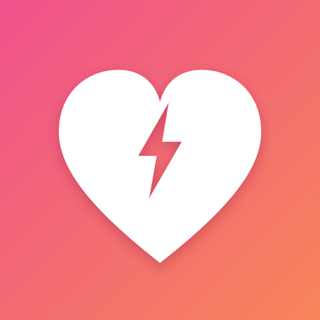
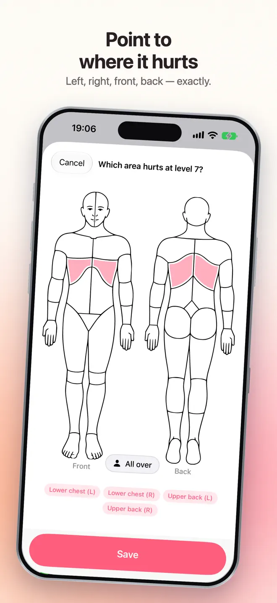
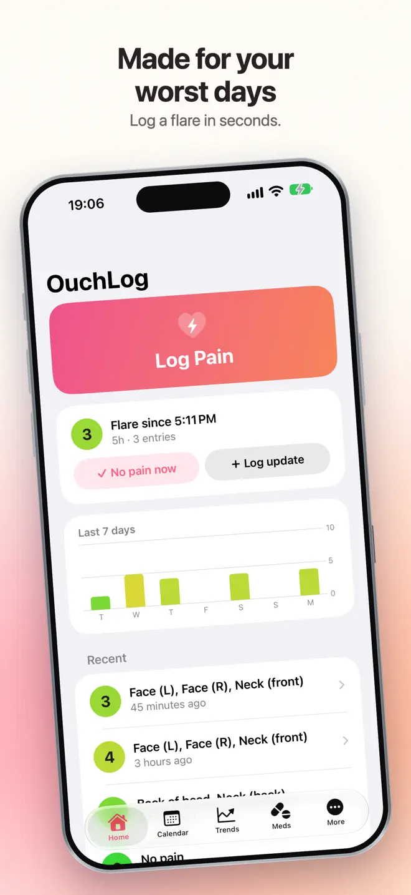
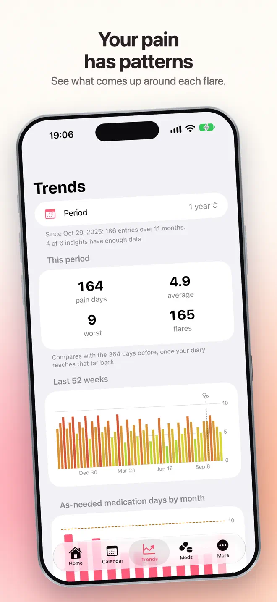
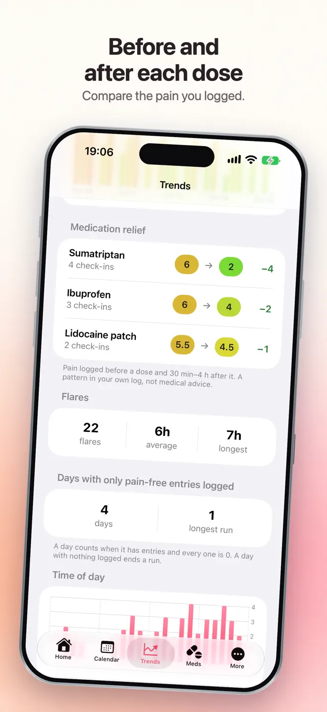

Log a flare in five seconds. See what actually helps.
Ouch Log is a pain tracker and symptom diary for people living with chronic pain, migraine, fibromyalgia, arthritis and other long-term conditions. Tap a pain level, tap where it hurts, done — then walk into your next appointment with a report.
iPhone, iPad and Android · Works offline · No account


What it does
A pain diary made for your worst days
Large targets, high contrast and almost no typing. Add the details later, once the flare has passed.
Five-second logging
Tap a pain level and the spot on a body map — left, right, front and back. Triggers, pain types, medication and notes can wait.
Flare timer
During a flare, Home shows how long it has lasted. Tap “No pain now” when it eases.
Medication relief
Your pain before each dose next to your pain 30 minutes to 4 hours after it, for every medication.
Dose limits you set
A daily maximum and the hours between doses, with a count of where you stand. Ouch Log only counts; it never blocks a dose.
Patterns and trends
7, 30 or 90 days compared with the period before: flares, time of day, body regions, pain types, triggers and days of work or school missed.
Reports for your doctor
Add your visits and the questions you want to ask. PDF reports for any range, with your questions printed at the top, and CSV export of every entry.
How it works
From a bad day to a clear picture
Log while it hurts
Two taps on the level and the body map. On iPhone you can also log from a widget or Apple Watch without opening the app.
Look back
A calendar with a color dot for every day, and a one-page summary each month.
Walk in with proof
A reminder the evening before your appointment, with a report covering everything since your last visit.


Your data
Private by design
- Entries stay on your device. Pain entries, notes and medications are never sent to us.
- No account and no sign-up. Open the app and log.
- Works fully offline, and you can export a backup whenever you like.
- Lock the diary with Face ID or your passcode.
- Apple Health is optional on iPhone and off until you connect it.
Ouch Log is a pain diary, not a medical device. It does not diagnose or treat, and does not give medical advice. Always talk to a healthcare professional about your symptoms and before making decisions about medication.
Questions
Before you download
Do I need an account to use Ouch Log?
No. There is no account and no sign-up. Your entries stay on your device.
Can I show my pain history to my doctor?
Yes. Ouch Log makes PDF reports for 7, 30 or 90 days, a custom range, or since your last visit, with the questions you want to ask printed at the top. You can also export every entry as CSV.
Does Ouch Log tell me which medication works?
It shows your own log: the pain level before each dose next to the level 30 minutes to 4 hours after it, for every medication. It is a pattern in your entries, not medical advice.
Does it work without internet?
Yes. Ouch Log works fully offline.
Is Ouch Log a medical device?
No. It is a diary. It does not diagnose, treat or give medical advice.
Which devices and languages does Ouch Log support?
iPhone and iPad (iOS 17 or later) and Android. The app is available in 20 languages: English, Chinese (Simplified and Traditional), Dutch, French, German, Hindi, Indonesian, Italian, Japanese, Korean, Polish, Portuguese, Russian, Spanish, Swedish, Thai, Turkish, Ukrainian, Vietnamese.
- Made for
- People living with chronic pain, migraine, fibromyalgia, arthritis and other long-term conditions
- Platforms
- iPhone and iPad (iOS 17 or later) · Android
- Languages
- 20, including English, Chinese (Simplified and Traditional), Dutch, French, German, Hindi
- Category
- Medical
- Developer
- Ho Van Dai
- Page updated